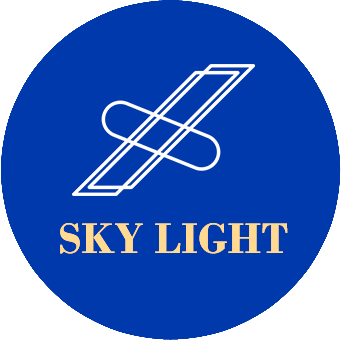
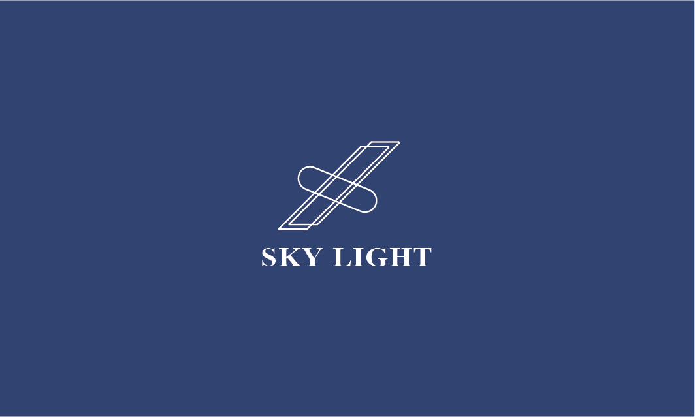
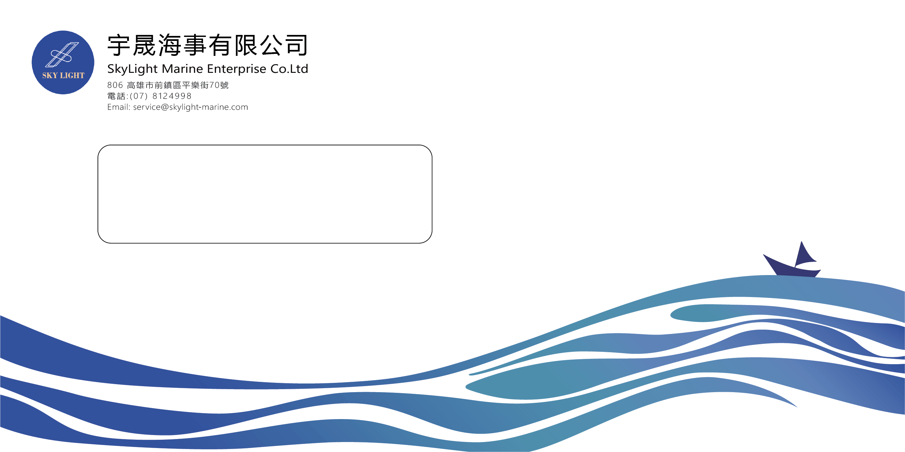
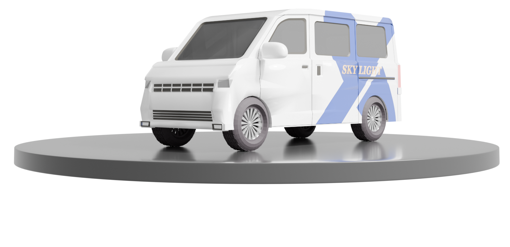

GRAPHIC DESIGN · 2026
SKY LIGHT
Corporate identity design for a maritime communications company —
integrating satellite systems, ocean navigation, and aerial connectivity.
Corporate identity design for a maritime communications company —
integrating satellite systems, ocean navigation, and aerial connectivity.

The SKY LIGHT logo merges a satellite dish silhouette with an ocean wave, visualising the bridge between aerial data relay and maritime operations. The wordmark is set in a geometric sans with fine tracking.
色彩系統選用深海藍與高亮米白，呼應公司主業：遠洋通訊與衛星定位。



DL 規格信封（110 × 220 mm），封口貼印 LOGO 完封蠟封效果， 正面留白以保留手寫收件人姓名的彈性。

針對公司車隊設計的全車身貼膜方案。以深海藍為底， 衛星訊號波紋延伸至車側，大面積留白強化速度感與現代科技形象。
在 Blender 建模的車身貼膜全尺寸預覽 — 拖曳旋轉、滾輪縮放，360° 檢視貼膜效果。